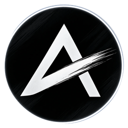

AnalisMarket
Analisa teknikal otomatis · 131 pasar
Uji tertutup dibuka
App-nya sudah
bisa dipasang
di Android.
Chart, pantauan yang mengabari lewat notifikasi, dan kalender berita. Semuanya di satu app. iOS menyusul.
131
pasar kripto,
emas, dan forex
Yang bisa memasang sekarang
Kamu yang kemarin mengisi email, atau yang pernah masuk ke analismarket.com dengan Google.
Android · uji tertutup
Bukan nasihat investasi
iOS menyusul